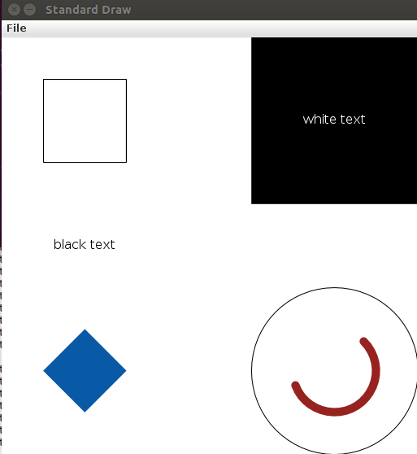

Nesta aula resolves problemas maiores de forma organizada: dividir em métodos, generalizar código repetido e testar cada parte à medida que a escreves.
Contam para a nota dos exercícios das aulas e submetem-se no Mooshak até ao prazo. Para ter 100% nesta aula basta resolver os exercícios do guião principal. Se um colega te ajudou de forma direta, indica-o nos comentários do programa.
ED004 10 %ED088 50 %ED015 50 %ED101 25 %Resolve o problema [ED004] Jogo do Galo. Podes também submeter a tua solução no Mooshak.
Dicas e notas
Resolve o problema [ED088] Jogo da Vida. Podes também submeter a tua solução no Mooshak.
Dicas e notas
Passos sugeridos
write() da classe Game, que deve escrever a matriz m[][] na saída padrão. Chama g.write() no método main para testar se o que fizeste está a funcionar. Sempre que implementares novos métodos, testa o seu funcionamento individual!int countAlive(int y, int x). Este método deve percorrer as oito células vizinhas da posição (y,x) e contar quantas são iguais a ALIVE (ou seja, iguais a 'O'). Não te esqueças de testar depois de implementar!void iterate(), que faz uma iteração do jogo da vida, ou seja, produz a nova geração a partir da atual. Para isso podes criar uma nova matriz (por exemplo com char m2[][] = new char[rows][cols];), percorrer todas as posições e colocar DEAD ou ALIVE consoante o número de vizinhos (aqui chamas o countAlive(y,x) que implementaste antes). No fim, copia o conteúdo da nova matriz (m2[][]) para a matriz que contém o estado atual (m[][]). É fundamental não escrever logo na matriz m[][] enquanto vais criando a nova geração, por causa da regra do enunciado: todos os nascimentos e mortes de células têm lugar em simultâneo, isto é, as alterações têm por base o estado atual e nunca o estado futuro.
main: chama n vezes o método que faz uma iteração (g.iterate()) e no fim escreve o resultado (g.write()).Neste exercício a ideia é tentares resolver o problema de forma organizada e estruturada sozinho. O problema é o [ED015] Sopa de Letras, também disponível no Mooshak.
Antes de começar a escrever código
Durante a implementação
main.Para cimentar os teus conhecimentos sobre programação bem estruturada, segue mais um problema: [ED101] O Mundo da Tartaruga, também disponível no Mooshak.
Se já fizeste todos os outros exercícios e quiseres brincar um pouco com interfaces gráficas no seguimento do problema anterior, podes usar um TAD de desenho chamado StdDraw, implementado por docentes da Universidade de Princeton. Começa por descarregar o ficheiro StdDraw.java, compila-o e executa-o. Deves ver uma janela como a que se segue:

Espreita o método main para ver como as imagens da janela foram geradas. Como referência, podes consultar a documentação da classe StdDraw.
A ideia deste exercício é criar uma classe para Turtle Graphics, um termo que designa um tipo de criação de desenhos usando um "cursor" que vai "andando" por um plano. Desenhas num plano cartesiano (com tamanho dado na construção do objeto) e tens um "cursor", a tartaruga, com uma posição e orientação, que pode andar na direção atual e tem um lápis que pode estar levantado ou pousado.
Turtle que guarda a posição da tartaruga (coordenadas x e y), a orientação atual (uma direção em graus) e o estado do lápis (pousado/levantado). A classe deve também guardar o tamanho da área de desenho. Cria um construtor padrão que coloca a tartaruga na posição (0,0), com orientação de 0 graus e o lápis pousado.LibTurtle: